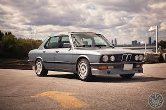
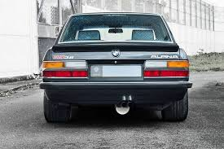
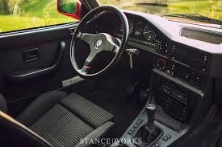

BMW E28
The Second Generation of the 5 Series (1981 - 1988)



Car Specifications
- Engine Options: 1.8L Inline-4 to 3.5L Inline-6
- Power: 90 - 286 hp
- Torque: 140 - 340 Nm
- Transmission: 4-speed manual, 5-speed manual, 4-speed automatic
- Top Speed: 185 km/h (115 mph) - 250 km/h (155 mph, M5)
- 0-100 km/h: ~6.5 seconds (M5)
- Fuel Economy: ~8 - 12 L/100 km
- Production Years: 1981 - 1988
- Body Style: 4-door sedan
- Drive Type: Rear-Wheel Drive
- Weight: 1,200 - 1,500 kg
About the BMW E28
The BMW E28 was the second generation of the 5 Series, building on the success of the E12. It introduced significant improvements in design, performance, and technology, cementing the 5 Series as a leader in the executive sedan market.
The E28 was also the first 5 Series to feature a diesel engine and the legendary M5 variant, combining luxury with high performance.
Image Gallery


Key Features
- Performance: Introduction of the high-performance M5 variant.
- Technology: On-board computer, ABS, and electronic fuel injection.
- Design: Refined exterior and improved aerodynamics.
Technical Information
The BMW E28 featured advanced engineering and a range of reliable engines:
Engine Codes and Iterations
- M10: 1.8L Inline-4, used in the 518i.
- M20: 2.0L and 2.5L Inline-6, used in 520i and 525e.
- M30: 2.8L to 3.5L Inline-6, used in 528i, 533i, and 535i.
- S38: 3.5L Inline-6, used in the iconic M5.
Conclusion
The BMW E28 was a game-changer for the 5 Series, blending innovation, style, and performance. Its legacy, especially with the introduction of the M5, has made it one of the most cherished BMW models of all time.